← 返回阅读库 · 原论文目录
论文讲解阅读文档 · 论文精读 · v217
DeepSeek下一代技术曝光！梁文锋获ACL'25最佳论文奖 NSA
视频时长 00:10:26；讲解文字 3,269 字符；提取讲解画面 96 张。按视频原顺序阅读，每段文字保留时间戳。
文字来自整段视频的自动语音转写，按自然停顿分段，并与 PPT / 论文页面 / 演示画面对齐。未将讲解压缩为摘要；术语、数字和口述公式请结合画面及原论文核对。 阅读稿已校正规范部分明确术语误识别；原始逐字稿和每处修改记录另行保留。
讲解画面为源视频截图（640×360），不是可编辑 PPT 文件。全片按每秒 2 帧扫描内容变化，逐步展开页保留；连续动画保留代表画面。清晰度受源视频限制。
下载完整资料包 · 含离线 HTML、PDF、Word、全部 PPT 画面和字幕。
原论文与材料
Native Sparse Attention: Hardware-Aligned and Natively Trainable Sparse Attention · 下载完整 PDF（25 页）
按时间阅读
00:00:00–00:00:04 · 画面 001
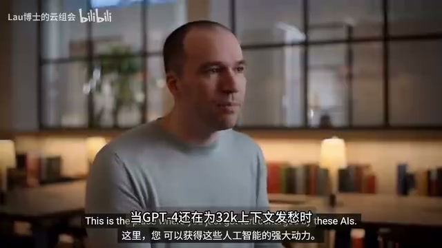
00:00:00–00:00:04 · 画面 001当 GPT-4 还在为 32K 上下文发愁时，中国的团队已经把大模型的视野拉到了 100 万 Tokens，相当于一次性读完整套三体。就在刚刚结束的 ACL2025 这个被称为计算语言学诺贝尔奖的舞台上，一篇来自 DeepSeek 的论文震撼炸场，梁文峰亲自挂帅通讯作者，从 8360 篇投稿里杀出重围，拿到最佳论文。
00:00:04–00:00:05 · 画面 002
00:00:04–00:00:05 · 画面 00200:00:05–00:00:09 · 画面 003
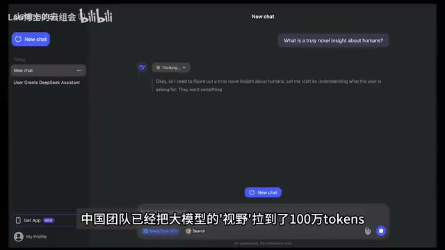
00:00:05–00:00:09 · 画面 00300:00:09–00:00:13 · 画面 004
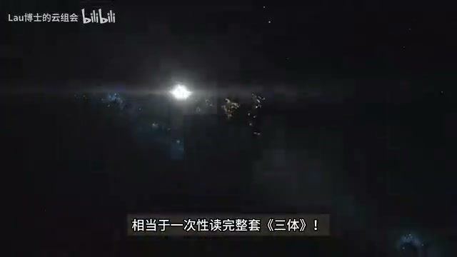
00:00:09–00:00:13 · 画面 00400:00:13–00:00:17 · 画面 005
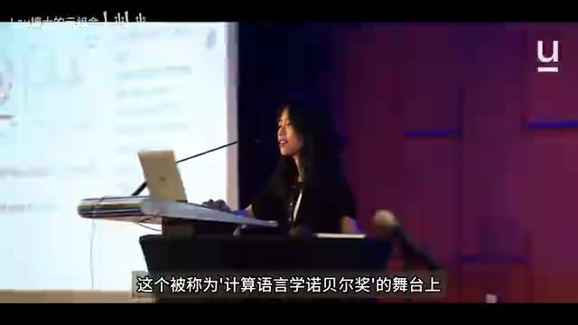
00:00:13–00:00:17 · 画面 00500:00:17–00:00:21 · 画面 006
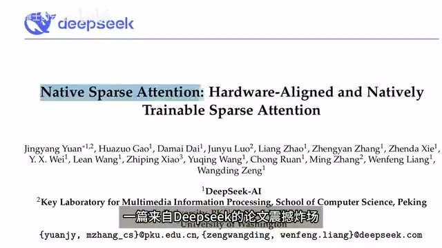
00:00:17–00:00:21 · 画面 00600:00:21–00:00:25 · 画面 007
00:00:21–00:00:25 · 画面 00700:00:25–00:00:29 · 画面 008
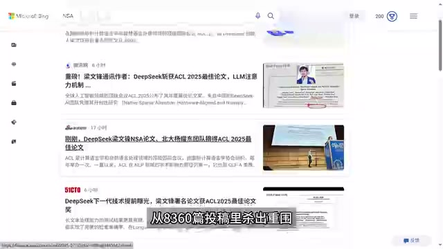
00:00:25–00:00:29 · 画面 008他看见让 OpenAI 做不住的事，把长文本处理速度直接飙到 11 倍，准确率大幅提升。马斯克说 AGI 要懂人类情感，但如果连十万字的小说都读不完，谈何理解。
00:00:29–00:00:30 · 画面 009
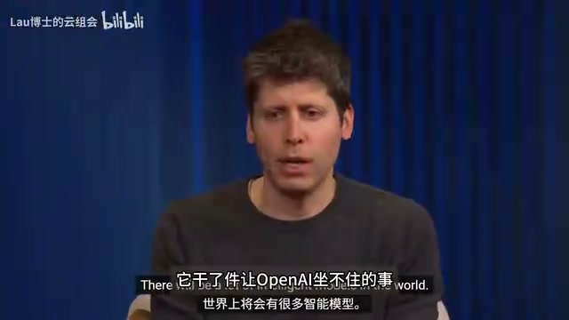
00:00:29–00:00:30 · 画面 00900:00:30–00:00:34 · 画面 010
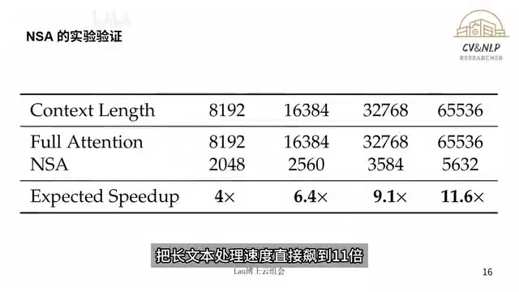
00:00:30–00:00:34 · 画面 01000:00:34–00:00:38 · 画面 011
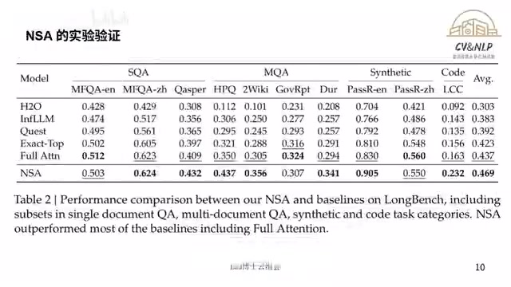
00:00:34–00:00:38 · 画面 01100:00:38–00:00:42 · 画面 012
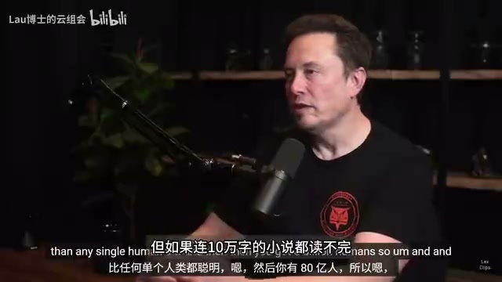
00:00:38–00:00:42 · 画面 01200:00:42–00:00:43 · 画面 013
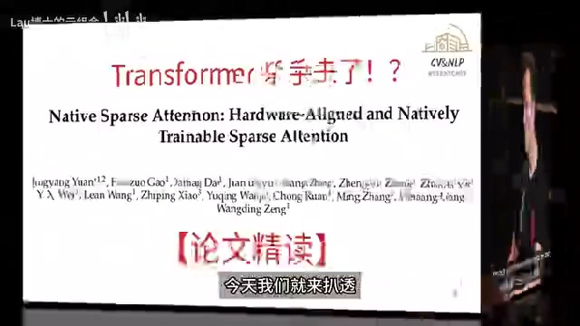
00:00:42–00:00:43 · 画面 013今天我们就来 battle 这个让 AI 脱胎换骨的原生稀疏注意力，看完你就知道为什么这篇论文会被业内疯传，是下一代 DeepSeek 模型的底层架构。欢迎来到六博士的云组会，我们每周都将至少有一篇高质量的论文精读发布出来。相信在一系列的论文学习以后，你就能成为人工智能领域的专家。正如片头所提到的，大模型对于长文本处理能力一直是兵家必争之地。
00:00:43–00:00:48 · 画面 014
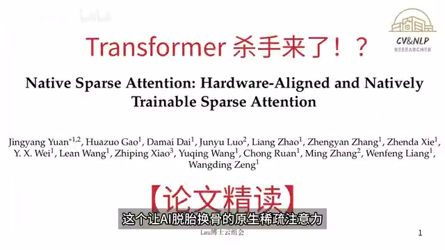
00:00:43–00:00:48 · 画面 01400:00:48–00:00:49 · 画面 015
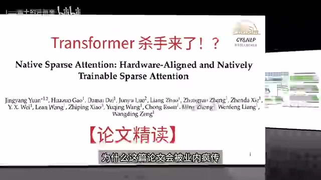
00:00:48–00:00:49 · 画面 01500:00:49–00:00:53 · 画面 016
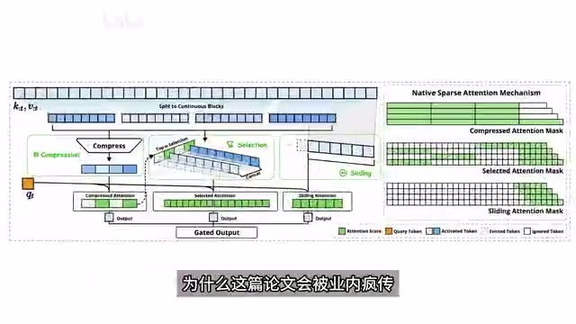
00:00:49–00:00:53 · 画面 01600:00:53–00:00:54 · 画面 017
00:00:53–00:00:54 · 画面 01700:00:54–00:01:02 · 画面 018
00:00:54–00:01:02 · 画面 01800:01:02–00:01:03 · 画面 019
00:01:02–00:01:03 · 画面 01900:01:03–00:01:07 · 画面 020
00:01:03–00:01:07 · 画面 02000:01:07–00:01:10 · 画面 021
00:01:07–00:01:10 · 画面 02100:01:10–00:01:13 · 画面 022
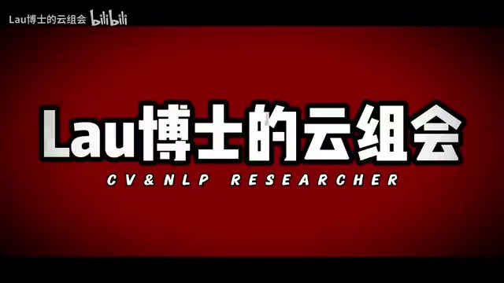
00:01:10–00:01:13 · 画面 02200:01:13–00:01:17 · 画面 023
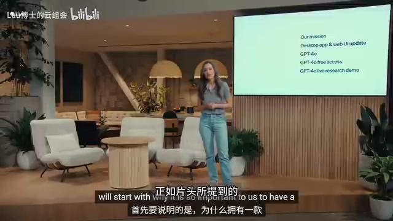
00:01:13–00:01:17 · 画面 02300:01:17–00:01:21 · 画面 024
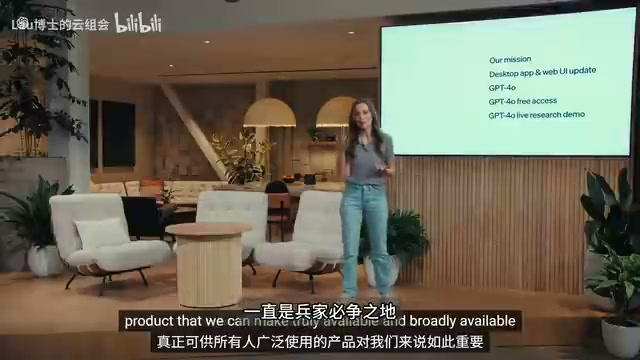
00:01:17–00:01:21 · 画面 024包括 OpenAI 的 O 系列 Google Gemini 都在持续发力这也是为什么 DeepSeek 团队要研发 NSA、NSA 的核心步骤包括三个接下来我们就结合下面这句话关于小明学编程的例子以及原文的图二来讲解这三个步骤从图二可以看到一段序列被分成四个连续的 block
00:01:21–00:01:24 · 画面 025
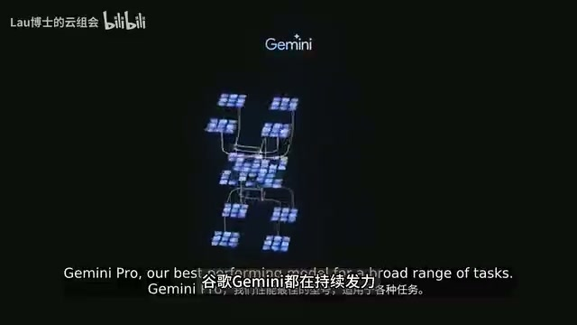
00:01:21–00:01:24 · 画面 02500:01:24–00:01:26 · 画面 026
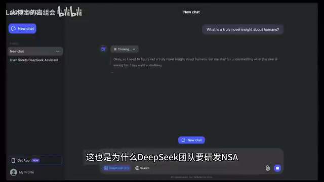
00:01:24–00:01:26 · 画面 02600:01:26–00:01:27 · 画面 027
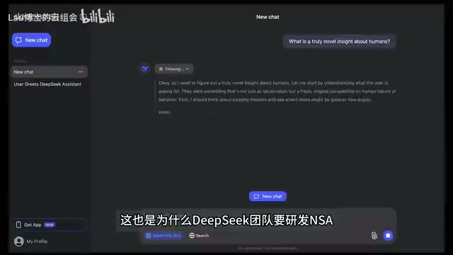
00:01:26–00:01:27 · 画面 02700:01:27–00:01:30 · 画面 028
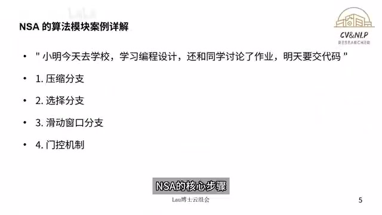
00:01:27–00:01:30 · 画面 02800:01:30–00:01:36 · 画面 029
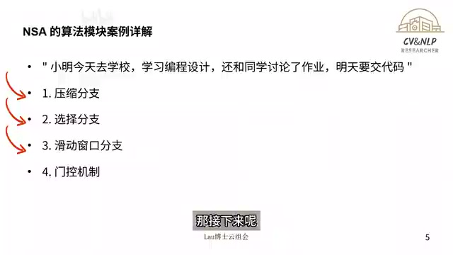
00:01:30–00:01:36 · 画面 02900:01:36–00:01:37 · 画面 030
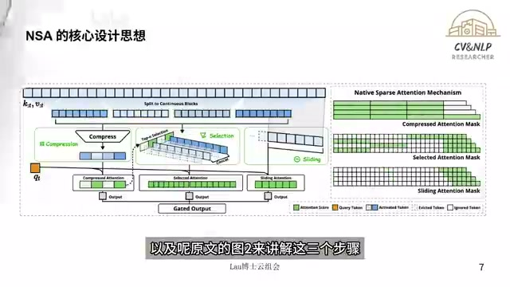
00:01:36–00:01:37 · 画面 03000:01:37–00:01:42 · 画面 031
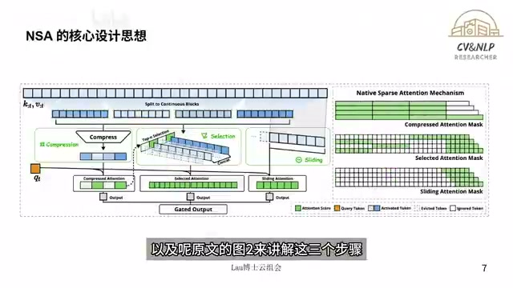
00:01:37–00:01:42 · 画面 03100:01:42–00:01:51 · 画面 032
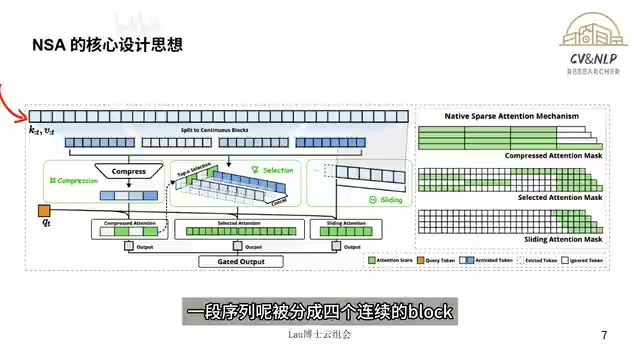
00:01:42–00:01:51 · 画面 032第一个步骤叫做压缩分支，这个步骤就把多个连续的 Token 压缩成块。在案例就是按两个 Token 为一个块，将句子分为以下六块。这里用概括块替代原始的磁块，能够减少后续的计算量，同时计算了压缩的注意力，能够快速的定位核心的信息。可能有同学会有疑问，为什么分块后计算会节省算力呢？我再举个例子。
00:01:51–00:01:54 · 画面 033
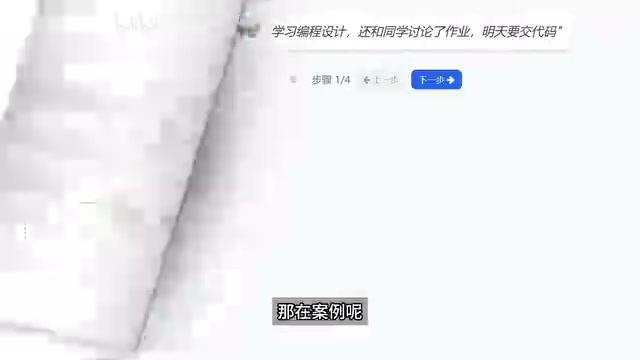
00:01:51–00:01:54 · 画面 03300:01:54–00:01:55 · 画面 034
00:01:54–00:01:55 · 画面 03400:01:55–00:01:56 · 画面 035
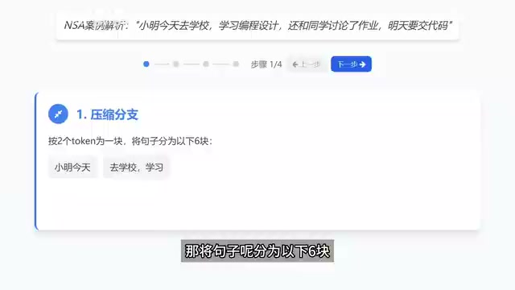
00:01:55–00:01:56 · 画面 03500:01:56–00:01:57 · 画面 036
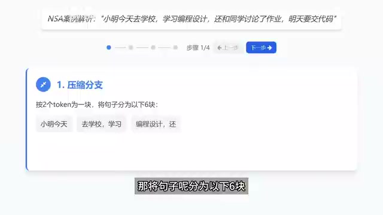
00:01:56–00:01:57 · 画面 03600:01:57–00:01:58 · 画面 037
00:01:57–00:01:58 · 画面 03700:01:58–00:01:59 · 画面 038
00:01:58–00:01:59 · 画面 03800:01:59–00:02:03 · 画面 039
00:01:59–00:02:03 · 画面 03900:02:03–00:02:04 · 画面 040
00:02:03–00:02:04 · 画面 04000:02:04–00:02:13 · 画面 041
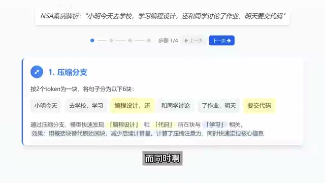
00:02:04–00:02:13 · 画面 041有总共是 4 个 Token，那互相之间做 Attention 就是 4x4 等于 16 次乘法计算。但如果把两个 Token 合并在一起，那就是 2x2 等于 4 次的乘法计算，大幅的减少了计算量。我们接着看小明的这个例子，通过压缩注意力的计算 NSA 发现编程设计和代码所在快呢与学习是相关的。
00:02:13–00:02:17 · 画面 042
00:02:13–00:02:17 · 画面 04200:02:17–00:02:21 · 画面 043
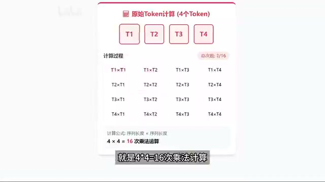
00:02:17–00:02:21 · 画面 04300:02:21–00:02:23 · 画面 044
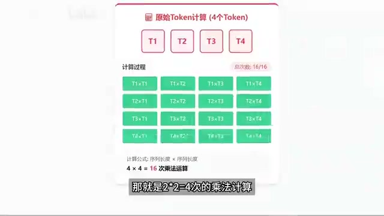
00:02:21–00:02:23 · 画面 04400:02:23–00:02:27 · 画面 045
00:02:23–00:02:27 · 画面 04500:02:27–00:02:34 · 画面 046
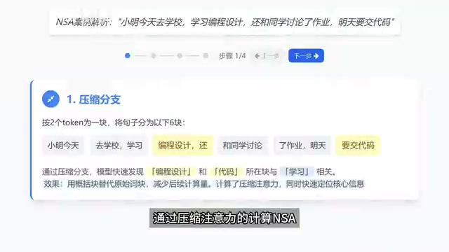
00:02:27–00:02:34 · 画面 046选择分支则是在压缩 Token 的基础上，通过公式计算出 TopM 个有意义的块，只计算这些块的注意力，而忽略了其他的 Token，再次减少计算量。而滑动窗口的注意力就更好能理解了，每个块只需要和自身附近的块去做交互，而不是去计算全局的注意力，计算量自然大幅的减少。最后三管齐下，通过门控机制给三个不同的方法进行加权，得到最终的输出。
00:02:34–00:02:38 · 画面 047
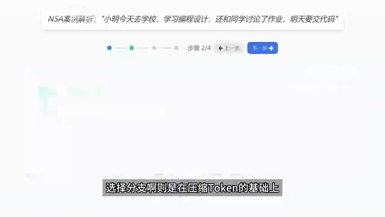
00:02:34–00:02:38 · 画面 04700:02:38–00:02:39 · 画面 048
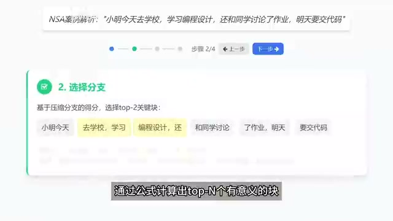
00:02:38–00:02:39 · 画面 04800:02:39–00:02:47 · 画面 049
00:02:39–00:02:47 · 画面 04900:02:47–00:02:48 · 画面 050
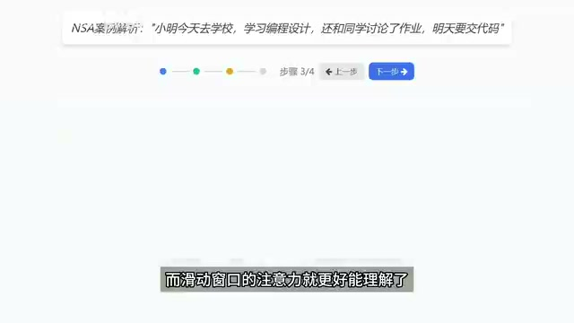
00:02:47–00:02:48 · 画面 05000:02:48–00:02:49 · 画面 051
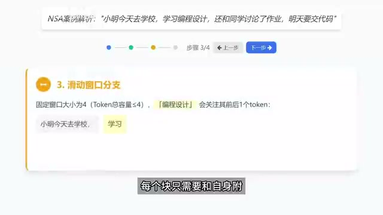
00:02:48–00:02:49 · 画面 05100:02:49–00:02:50 · 画面 052
00:02:49–00:02:50 · 画面 05200:02:50–00:02:52 · 画面 053
00:02:50–00:02:52 · 画面 05300:02:52–00:02:59 · 画面 054
00:02:52–00:02:59 · 画面 05400:02:59–00:03:01 · 画面 055
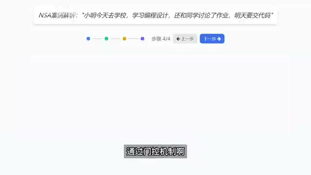
00:02:59–00:03:01 · 画面 05500:03:01–00:03:03 · 画面 056
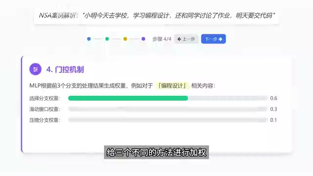
00:03:01–00:03:03 · 画面 05600:03:03–00:03:04 · 画面 057
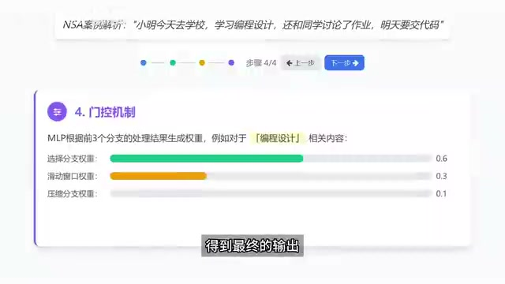
00:03:03–00:03:04 · 画面 057那这几个分支的策略呢，也呼应了论文的标题原生稀疏注意力。领主会呢，解读过不少谷歌和华为的论文，这篇论文是六博士看完真正觉得有一种成体系的美的感觉。不得不说 DeepSeek 确实是强的可怕。
00:03:04–00:03:05 · 画面 058
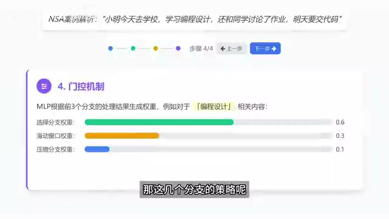
00:03:04–00:03:05 · 画面 05800:03:05–00:03:09 · 画面 059
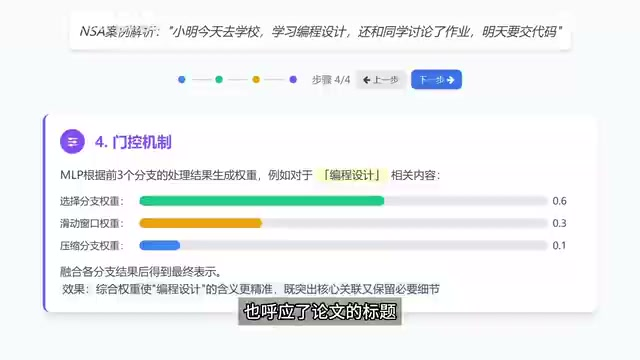
00:03:05–00:03:09 · 画面 05900:03:09–00:03:12 · 画面 060
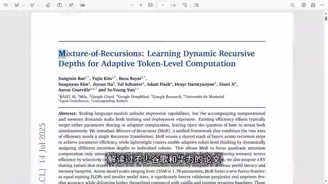
00:03:09–00:03:12 · 画面 06000:03:12–00:03:13 · 画面 061
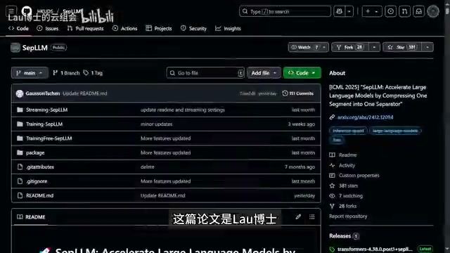
00:03:12–00:03:13 · 画面 06100:03:13–00:03:15 · 画面 062
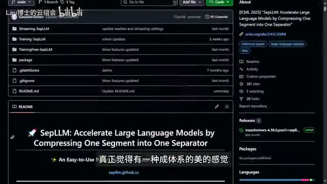
00:03:13–00:03:15 · 画面 06200:03:15–00:03:19 · 画面 063
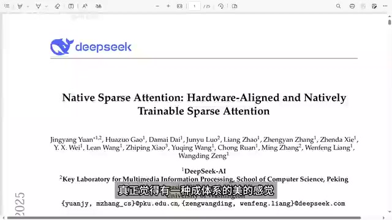
00:03:15–00:03:19 · 画面 06300:03:19–00:03:21 · 画面 064
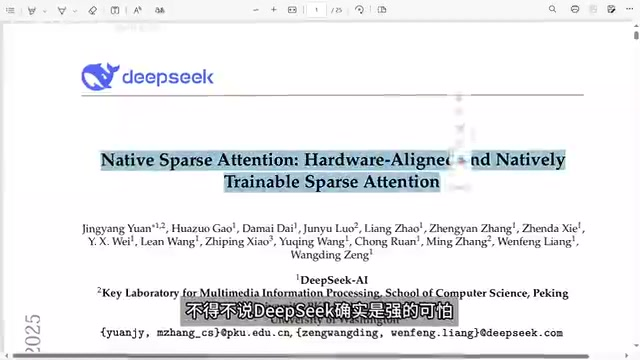
00:03:19–00:03:21 · 画面 064说到这里，再给不熟悉我们的同学介绍一下本频道六博士云组会的自律，打造一站式人工智能交流平台，用尽可能好理解的语言让每位同学都能了解 AI 最前沿的内容。除了视频以外，也欢迎大家加入云组会的知识星球，我们做了三件事：第一，系统性的拆解了热门领域的学习路线，帮你的避开无效的努力；第二，
00:03:21–00:03:28 · 画面 065
00:03:21–00:03:28 · 画面 06500:03:28–00:03:29 · 画面 066
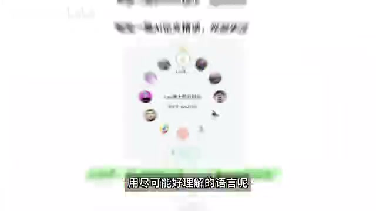
00:03:28–00:03:29 · 画面 06600:03:29–00:03:38 · 画面 067
00:03:29–00:03:38 · 画面 06700:03:38–00:03:39 · 画面 068
00:03:38–00:03:39 · 画面 06800:03:39–00:03:43 · 画面 069
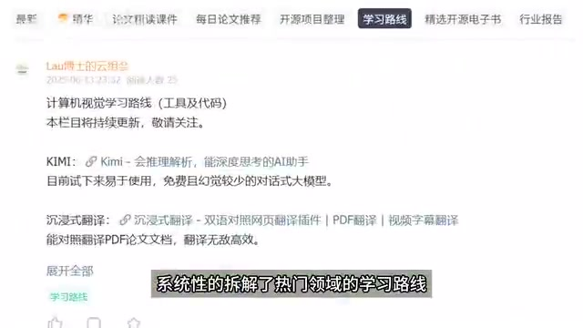
00:03:39–00:03:43 · 画面 06900:03:43–00:03:45 · 画面 070
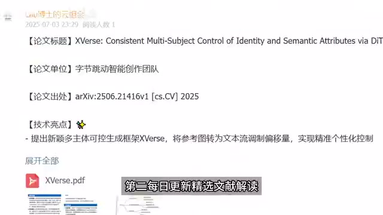
00:03:43–00:03:45 · 画面 070每日更新精选文献解读省去 80%的检索时间 3.建立专家学者交流群不定期掉落福利直接与专家学者互动交流深度参与选题云组会欢迎各位同学的加入论文通过多组实验验证了 NSA 的性能我们结合例子来理解在通用用户里面比如我们看到表 1
00:03:45–00:03:48 · 画面 071
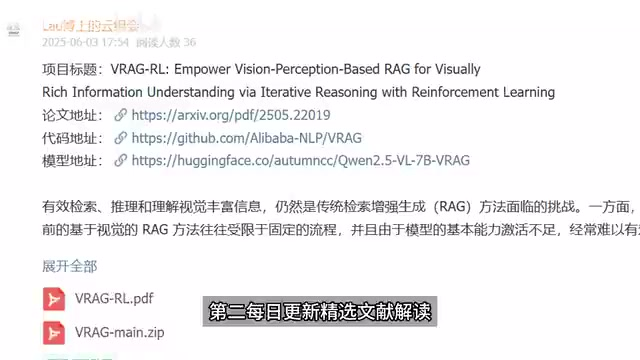
00:03:45–00:03:48 · 画面 07100:03:48–00:03:52 · 画面 072
00:03:48–00:03:52 · 画面 07200:03:52–00:03:54 · 画面 073
00:03:52–00:03:54 · 画面 07300:03:54–00:03:55 · 画面 074
00:03:54–00:03:55 · 画面 07400:03:55–00:03:57 · 画面 075
00:03:55–00:03:57 · 画面 07500:03:57–00:04:04 · 画面 076
00:03:57–00:04:04 · 画面 07600:04:04–00:04:05 · 画面 077
00:04:04–00:04:05 · 画面 07700:04:05–00:04:29 · 画面 078
00:04:05–00:04:29 · 画面 078NSA 在 MMLU 支持问答、GSM8K 数学推理等 9 项任务里面 7 项超过了全注意力。比如 Drop 阅读理解的任务里面，这就意味着在处理从文章中找数据计算结果的问题时，NSA 能够更精准地捕捉关键的信息。在长文本的任务上，比如像表 2LongBench 包含了多文档的问答、代码理解等等的任务，
00:04:29–00:04:30 · 画面 079
00:04:29–00:04:30 · 画面 07900:04:30–00:05:03 · 画面 080
00:04:30–00:05:03 · 画面 080NSA 的平均得分是 0.469 超过了全注意力 0.137 和 Exact-Top 0.423 特别是 HPQ 多条问答里面 NSA 的得分是 0.437 远超全注意力的 0.350 比如回答论文当中方法 A 和方法 B 的区别时 NSA 能够更好地关联不同的章节的信息在推理的任务上面比如我们看到表 3
00:05:03–00:05:04 · 画面 081
00:05:03–00:05:04 · 画面 08100:05:04–00:05:33 · 画面 082
00:05:04–00:05:33 · 画面 082AIME 是高难度的数学竞赛题 NSA 在 8K 长度时的准确率是 0.12 亿全注意力仅得 0.04616K 长度时就是 0.146 比上 0.092 说明 NSA 能够利用长上下文进行复杂的推导比如解多步骤的方程式更好的记住中间的结果在长文本的检索上我们看到图
00:05:33–00:05:52 · 画面 083
00:05:33–00:05:52 · 画面 083那 64K 的这个 Needle-in-a-Haystack 的测试里面呢，NSA 能够 100%的找到隐藏的关键信息。那比如呢，在一本小说里面找 NSA 这个词，证明啊它的压缩加上选择机制是有效的。那从训练的过程来看，图示，
00:05:52–00:06:04 · 画面 084
00:05:52–00:06:04 · 画面 084NSA 的损失曲线始终是低于全注意力的，说明了 NSA 的可训练设计的样模型更好地学习了稀疏模式，并非简单的简直。NSA 的效率提升体现在训练和推导的全阶段。我们用处理 64K 文本的场景来说明，在训练阶段我们看到图 6 论文用 Triton 实现了 NSA 的核函数，
00:06:04–00:06:05 · 画面 085
00:06:04–00:06:05 · 画面 08500:06:05–00:06:13 · 画面 086
00:06:05–00:06:13 · 画面 08600:06:13–00:06:14 · 画面 087
00:06:13–00:06:14 · 画面 08700:06:14–00:06:40 · 画面 088
00:06:14–00:06:40 · 画面 088在 64K 的长度下前向传播的速度是全注意力的 9 倍，反向传播是 6 倍。这意味着训练一个 64K 的上下文模型，NSA 能够节省约 60%到 80%的时间。原本需要 10 天的训练，NSA 只需要 1 到 2 天。在解码的阶段我们看到表示全注意力每部需访问的所有 64K 的 LIS-KV
00:06:40–00:07:55 · 画面 089
00:06:40–00:07:55 · 画面 089而 NSA 仅需访问约 5632 个这已经包括压缩选择以及窗口内存的访问减少了 11.6 倍由于解码是内存的瓶颈速度的提升将近 11.6 倍比如生成 64K 文本的炸药全注意力就需要 10 秒 NSA 仅需 0.8 秒更重要的是 NSA 的优势随着序列的长度增大而扩大8K 长度加速 4 倍 64K 是 11.6 倍我们看到图示这完美的适配了越长的文本越需要加速的实际需求比如处理 100K 的代码库的时候 NSA 的效率会更加的凸显优势这种效率的提升的核心是 NSA 的硬件对齐设计
通过了按 GQA 组加载数据连续访问 KV 块的设计，充分的利用了 GPU 硬件的特性，让稀疏化的加速理论在实际当中落地，避免了现有的稀疏化理论加速但实际失效的问题。NSA 的五大模块协同工作，实现了高效且高性能的长文本处理。压缩分支让模型看得广，
00:07:55–00:07:56 · 画面 090
00:07:55–00:07:56 · 画面 09000:07:56–00:08:50 · 画面 091
00:07:56–00:08:50 · 画面 091通过快据和快速掌握全局信息，避免在无关的内容上浪费计算。选择分支让模型抓得准，基于全局的轮廓挑选关键细节，而确保不遗留重要的信息。滑动窗口分支让模型顾得起，补充局部上下文增强细节理解。门控机制让模型调得灵，根据输入动态调整个分支的贡献。硬件核函数让模型跑得快，通过优化内存访问和计算的调度，将理论的效率转化成实际的速度。这一设计既解决了标准注意力的 OM 方的复杂度问题，又克服了现有的稀疏方法的训练缺陷，为长文本建模提供了新的高效方案。NSA 作为一种硬件对齐的原生可训练的稀疏注意力机制，
00:08:50–00:08:51 · 画面 092
00:08:50–00:08:51 · 画面 09200:08:51–00:10:21 · 画面 093
00:08:51–00:10:21 · 画面 093它的核心贡献可以总结为以下几点。第一点，创新的动态分层系数的策略，通过压缩选择、滑动仓口三个分支，在减少计算量的同时兼顾了全局上下文捕捉与局部细节的保留，解决了标准注意力的效率问题。第二，硬件对齐的工程优化，通过按 GQA 组加载数据连续的访问 KV 块的设计，充分的利用了 GPU 的硬件特性，让稀疏化的理论加速在实际当中落地，实现了 64K 长度下 9 到 11.6 倍的速度提升。三 、原生可训练的特性，所有的模块设计为可导，支持端到端的训练，避免了现有的稀疏方法的性能损失。实验证明，NSA 在通用任务、常文本任务和推理任务的性能均超过了全注意力。
第四 ，广泛的适应性，无论是知识问答、代码理解还是复杂的数学推理，NSA 都表现出了右翼的性能，证明了它的通用稀疏注意力架构的鲁棒性。综上所述，NSA 为长文本大语言模型的高效建模提供了新的方式，它的稀疏化不是随机丢弃，而是有策略的保留关键信息的设计思想，为未来的注意力机制，优化提供了重要的参考。以上是本期视频的全部内容，欢迎关注六博士的云组会，成为人工智能领域的专家。
00:10:21–00:10:25 · 画面 094
00:10:21–00:10:25 · 画面 09400:10:25–00:10:26 · 画面 095
00:10:25–00:10:26 · 画面 09500:10:26–00:10:26 · 画面 096
00:10:26–00:10:26 · 画面 096转写与来源说明 · 0 个自动复核提示
保留 26 个原始语音片段，0 个片段触发自动复核提示。提示仅用于定位可能的术语、重复或识别问题，不等于已确认错误。
讲解画面为源视频截图（640×360），不是可编辑 PPT 文件。全片按每秒 2 帧扫描内容变化，逐步展开页保留；连续动画保留代表画面。清晰度受源视频限制。
原视频：paper/合集_2026-10-16_论文精读/DeepSeek下一代技术曝光！梁文锋获ACL'25最佳论文奖 NSA【论文精读】.mp4
SHA-256：d6eb903fbfc96a799e6fe348ff1279e7ab7c955e9f8214a01e2778d16a1b5fb1
全文按视频语音与画面制作。原论文可从上方链接下载；完整资料包保留全文、原始逐字稿、字幕和校对记录。